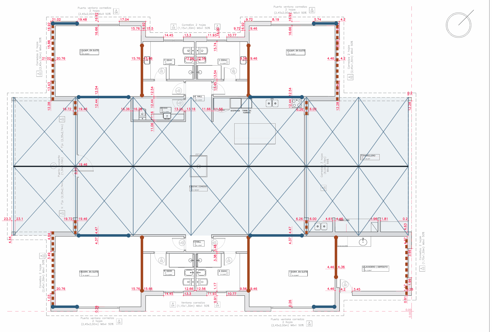

Padrón 27868 · Ruta 10, km 172,500 · Maldonado · Octubre 2026 · Predimensionado
Columnas y encadenado en caño 100 × 100 × 3,2 mm, arriostrados con cruces de steel framing
Nave central de cerchas de lapacho 20 × 20 con 8,05 m de luz, sobre columnas de caño de 3,00 m. Techo a dos aguas de 23,9 m de largo, con panel aislante de 30 mm y machimbre a la vista.
950 kgpesa cada cercha de lapacho
2,1 trecibe cada columna en servicio
3,2 mmespesor de pared para columnas y encadenado, en 100 × 100
27 crucesde San Andrés en fleje: 13 en muros y 14 en el techo
Caños de la estructura
Caño
Uso
Cantidad
Largo
Total
100 × 100 × 3,2 mm
Columnas de la nave
16
3,00 m
48 m
100 × 100 × 3,2 mm
Columnas de los cuerpos laterales
11
2,60 m
29 m
100 × 100 × 3,2 mm
Encadenado superior de la nave
64 m
100 × 100 × 3,2 mm
Encadenado superior de los laterales
85 m
Total caño 100 × 100 × 3,2
27 columnas y encadenado
38 barras de 6 m
226 m
100 × 50 × 2 mm
Correas del techo de la nave
7 líneas
23,9 m
167 m
Total caño 100 × 50 × 2
Correas
28 barras de 6 m
167 m
Peso del caño 100 × 100 × 3,2: unas 2,2 t. Barras sin contar desperdicio; el detalle está en la pestaña de columnas.
Resultados
Tema
Resultado
Cercha
950 kg cada una. Tirante en dos tramos de 4,02 m unidos con planchuela embutida
Herrajes
Un solo herraje por cercha: la T invertida del nudo central. El resto, barbilla y tornillos inoxidables
Columnas y encadenado
Caño 100 × 100 × 3,2 mm, acero ASTM A500 Grado B
Techo
Panel aislante de 30 mm: 88 paneles, cotizados en USD 27.438 con IVA
Arriostramiento
Cruces de San Andrés con fleje galvanizado de steel framing, en muros y techo
Anclajes
Cada apoyo se ancla para tracción por viento
Cada cercha pesa 950 kg y lleva un solo herraje oculto
Piezas: 1 tirante en dos tramos, 2 pares, 3 pendolón, 4 diagonales. Nudos: A talón, B cumbrera, C nudo central con empalme, D diagonal con par.
Despiece y peso
Pieza
Cant.
Largo (m)
Total (ml)
Peso (kg)
1 · Tirante inferior, en dos tramos
2
4,02
8,05
354
2 · Pares
2
4,28
8,56
376
3 · Pendolón
1
1,32
1,32
58
4 · Diagonales
2
1,87
3,74
164
Total por cercha
21,66
≈ 950
Lapacho a 1.100 kg/m³: 44 kg por metro lineal de pieza 20 × 20.
Esfuerzo en cada pieza
Pieza
Trabaja a
En servicio
Mayorado
Tirante
Tracción
3,1 t
4,3 t
Pares
Compresión
3,3 t
4,6 t
Pendolón
Tracción
0,9 t
1,2 t
Diagonales
Compresión
1,0 t
1,4 t
El tirante trabaja estirado en toda su longitud: el empalme del centro tiene que transmitir 4,3 t de tracción.
Empalme del tirante con planchuela embutida
Nudo C. Una sola planchuela en T invertida une los dos tramos del tirante y cuelga del pendolón. Queda dentro de una ranura hecha desde la cara superior: desde abajo no se ve.
Elemento
Medida
Planchuela
8 mm de espesor, 550 mm de largo y 150 mm de alto, con alma de 150 × 260 mm hacia el pendolón
Corte
Se saca entera de una chapa de 550 × 410 × 8 mm
Ranura en la madera
10 mm de ancho y 165 mm de profundidad, desde la cara superior
Pasadores
10 lisos de Ø16 × 190 mm: 4 en cada tramo del tirante y 2 en el pendolón
Terminación
Tapón de lapacho Ø18 en cada extremo de pasador y listón encolado cerrando la ranura
Resistencia
11,6 t por lado frente a 4,3 t de tracción: trabaja al 37 %
Material
Acero galvanizado en caliente; agujeros de 17 mm en la chapa y de 16 mm justos en la madera
Los demás nudos: barbilla y tornillos inoxidables
La T invertida es el único herraje. En los otros nudos el esfuerzo pasa de madera a madera por una barbilla, que es un rebaje de encastre, y los tornillos sujetan la pieza y resisten cuando el viento invierte los esfuerzos.
Nudo
Esfuerzo mayorado
Cómo se resuelve
Tornillos
A · Talón, par con tirante
4,3 t de empuje del par sobre el tirante
Barbilla de 40 mm a 20 cm del extremo del tirante: el empuje lo toma la madera
4 de Ø10 × 300
B · Cumbrera, pares con pendolón
1,2 t de tracción en el pendolón
Barbilla en la cabeza del pendolón, donde apoyan los dos pares
2 por par, cruzados
C · Nudo central
4,3 t de tracción en el tirante
T invertida de 8 mm con pasadores
—
D · Diagonales, los dos extremos
1,4 t de compresión
Apoyo a tope con barbilla de 30 mm
2 de Ø8 × 240 por extremo
Talón encastrado
Nudo A. El par calza en el tirante con una barbilla. La cercha apoya en la columna a través de la placa de asiento.
El talón no puede quedar sólo a tornillos. Sin barbilla, los 4,3 t de empuje pasarían enteros por los tornillos. Con la barbilla, la madera resiste 8 t y trabaja al 54 %.
Tornillos
Condición
Tipo
Estructurales para madera, de rosca larga, en acero inoxidable A2 o A4; no tornillos comunes de deck
Cantidad
Unos 20 por cercha
Colocación
Siempre con perforación previa: el lapacho es tan duro que el inoxidable se corta al roscar
Terminación
Cabeza embutida y tapón de lapacho
Viento
Con succión fuerte los pares y las diagonales pasan a tracción: los tornillos son los que mantienen los nudos cerrados
Opciones para alivianarla
Sección (ancho × canto)
Peso por cercha
Ahorro
Vista de frente
20 × 20 cm (actual)
945 kg
0 %
Actual
15 × 20 cm
710 kg
24 %
Idéntica
10 × 20 cm
470 kg
50 %
Idéntica
La madera trabaja a unos 10 kg/cm²: la sección 20 × 20 responde a la imagen, no a la carga. Con menos de 15 cm de ancho los pasadores de Ø16 pierden agarre y hay que recalcular los herrajes.
27 columnas y 149 m de encadenado, todo en caño 100 × 100 × 3,2 mm
Las 16 columnas de la nave reciben una cercha cada una. Las de los laterales sostienen el borde exterior de esos techos.
Cantidades
Caño
Uso
Cantidad
Largo
Total
100 × 100 × 3,2 mm
Columnas de la nave
16
3,00 m
48 m
100 × 100 × 3,2 mm
Columnas de los cuerpos laterales
11
2,60 m
29 m
100 × 100 × 3,2 mm
Encadenado superior de la nave
64 m
100 × 100 × 3,2 mm
Encadenado superior de los laterales
85 m
Total caño 100 × 100 × 3,2
27 columnas y encadenado
38 barras de 6 m
226 m
100 × 50 × 2 mm
Correas del techo de la nave
7 líneas
23,9 m
167 m
Total caño 100 × 50 × 2
Correas
28 barras de 6 m
167 m
Columnas
Cantidad
Largo
Espesor
Carga en servicio
Nave, bajo cada cercha
16
3,00 m
3,2 mm
2,1 t
Lateral chico, borde exterior
5
2,60 m
3,2 mm
0,6 t
Lateral grande, borde exterior
6
2,60 m
3,2 mm
0,6 t
Total
27
Cantidades tomadas del modelo de estructura. El largo de 2,60 m de las columnas laterales es supuesto.
1. Carga sobre cada cercha
Concepto
Cuenta
kg por cercha
Cercha de lapacho 20 × 20
21,66 ml × 44 kg/ml
950
Herrajes y pasadores
50
Cubierta: panel de techo, machimbre y correas
28,8 m² × 26,2 kg/m²
755
Peso propio
1.755
Sobrecarga de uso y mantenimiento
27,1 m² × 50 kg/m²
1.356
Total por cercha
3.111
Las 3,1 t se verifican: 1,76 t son peso propio permanente y 1,36 t son sobrecarga, que sólo actúa con gente o materiales sobre el techo. Cerchas cada 3,37 m, según el plano de obra.
2. Carga sobre cada columna
Concepto
kg por columna
Media cercha
500
Media cubierta de la nave
378
Media sobrecarga de la nave
678
Techo del cuerpo lateral que apoya en la misma columna
577
Total en servicio
2.133
Total mayorado para el cálculo
2.976
3. Espesor de las columnas
Caño (mm)
kg/m
Resiste
Uso con carga vertical
Uso con viento
Resultado
100 × 100 × 2,0
6,1
13,0 t
23 %
49 %
Se descarta: pared esbelta
100 × 100 × 2,5
7,6
16,3 t
18 %
29 %
Verifica, con poco margen
100 × 100 × 3,2
9,6
20,6 t
14 %
23 %
Recomendado
100 × 100 × 4,0
11,8
25,4 t
12 %
19 %
Sobrado
El peso no es el problema: hasta el caño de 2 mm lo soporta. El de 2 mm se descarta porque su pared abolla antes de agotar el acero, no deja reserva frente al viento y es delicado de soldar.
4. Sección del encadenado superior
Caño (mm)
kg/m
Uso
Flecha lateral
Resultado
100 × 50 × 3,2, de canto
7,1
191 %
41 mm
No verifica
100 × 50 × 3,2, acostado
7,1
170 %
14 mm
No verifica
100 × 100 × 2,5
7,6
100 %
11 mm
Al límite
100 × 100 × 3,2
9,6
81 %
8 mm
Recomendado
100 × 100 × 4,0
11,8
66 %
7 mm
Sobrado
El peso de la cercha no pasa por el encadenado: baja directo a la columna. El encadenado ata las cabezas de columna, recibe el viento del muro en vanos de 3,37 m y trabaja como cordón de las cruces del techo. Por eso necesita resistir de costado tanto como hacia abajo, y el caño cuadrado es el que mejor lo hace.
Montaje del encadenado
Detalle
Posición
Continuo, apoyado sobre la cabeza de las columnas
Columna
Cerrada arriba con tapa de 100 × 100 × 6 mm; para mantener 3,00 m de altura total se corta a 2,90 m
Unión
Soldadura en todo el contorno del apoyo
Empalmes
Siempre sobre una columna, nunca a mitad de vano
Cercha
Apoya sobre el encadenado con la placa de asiento, justo encima de la columna
Condición: cada cercha y cada tirante de los cuerpos laterales apoya sobre una columna, nunca a mitad de vano del encadenado.
Especificación
Ítem
Especificación
Columnas y encadenado
Caño cuadrado 100 × 100 × 3,2 mm
Acero
ASTM A500 Grado B, con certificado
Apoyo de la cercha
Placa de asiento 200 × 200 × 8 mm con horquilla y bulones pasantes
Protección
Galvanizado en caliente o epoxi más poliuretano, con extremos tapados
Techo de panel aislante de 30 mm: 88 paneles cotizados en USD 27.438
88 panelesde 1,00 m de ancho: 48 en la nave, 22 y 18 en los laterales
399 m²de cubierta colocada: 211 en la nave y 188 en los laterales
36 %de pendiente en la nave
USD 27.438total con IVA, con flete a obra
El panel cotizado
Característica
Dato
Producto
Hiansa-Panel 5G de 30 mm, con núcleo de poliuretano
Color
Gris Pizarra
Ancho útil
1,00 m
Largo
Viene de 4,95 m y el proveedor lo corta: 4,40 m para la nave y 4,70 m para los laterales
Colocación
En el sentido de la caída del agua, de cumbrera a alero
435,6 m² a USD 47 el m²; se factura el largo entero de 4,95 m
20.473,20
Perfilería
25 cumbreras de 1,10 m y 42,4 m de babeta
1.037,87
Fijaciones
300 tornillos de 4" con caballete y 1.280 tornillos de perfilería
341,98
Selladores
4 rollos de membrana autoadhesiva y 12 espumas de poliuretano
130,84
Flete
Entrega en obra, El Milagro, José Ignacio
506,00
Subtotal sin IVA
22.489,89
IVA 22 %
4.947,78
Total
27.437,67
Condición
Detalle
Proveedor
BMC Uruguay, cotización HIA-30-20261011 del 11/10/2026
Validez
10 días
Pago
100 % por adelantado, para generar los cortes
Entrega
Hasta 10 días después del pago
No incluye
Montaje ni descarga; para descargar hacen falta 2 peones como mínimo
Fijaciones a revisar con el proveedor. La cotización trae 300 tornillos para 88 paneles, unos 3 por panel. Con cinco líneas de apoyo por faldón y el viento de la zona, cada tornillo quedaría con unos 280 kg de arrancamiento mayorado; con dos tornillos por panel en cada línea harían falta cerca de 880.
Capas, de abajo hacia arriba
Capa
Se ve desde abajo
Función
kg/m²
1 · Cerchas de lapacho cada 3,37 m
Sí
Estructura principal
—
2 · Machimbre de pino ¾"
Sí
Cielorraso; va entre cerchas, fijado por debajo de las correas
10,0
3 · Correas de caño 100 × 50 × 2, cada 1,07 m
No
Atornilladas arriba de la cercha; llevan el techo de cercha a cercha
4,2
4 · Flejes en cruz de San Andrés
No
Arriostran el plano del techo, sobre las correas
0,3
5 · Panel de techo de 30 mm
No
Cubierta y aislación, fijada a las correas
10,2
Fijaciones y babetas
1,0
Total cubierta
≈ 26
Desde abajo sólo se ven la cercha y el machimbre. El caño de las correas queda escondido entre el machimbre y el panel.
Correas. Entre cercha y cercha hay 3,37 m: un caño 40 × 40 × 2 no alcanza para esa luz. Con caño 100 × 50 × 2 de canto cada 1,07 m, atornillado a la cara superior de la cercha, la correa trabaja al 81 % con la succión del viento y flecha 8 mm con carga de uso.
Cruces de San Andrés en fleje de steel framing, en muros y en los dos faldones
158 km/hviento de norma en la faja costera (118 kg/m²)
10,9 tempuje transversal sobre la casa
6,5 tempuje longitudinal
Los dos frentes del estar son vidriados y la galería y el parrillero son abiertos: en la nave no hay muros transversales. Los dos faldones del techo trabajan como vigas horizontales de 23,9 m que llevan el empuje hasta los muros de los dormitorios.

Cumbrera
Cruz de techo, una por faldón y por paño
Cruz transversal
Cruz longitudinal
Muro o paño con placa estructural
Sobre el plano de obra de la Arq. Carolina Mannise, lámina L1. Las líneas finas que cruzan la nave son los ejes de cercha.
Cruces
Cant.
Ubicación
Fleje galvanizado
Uso
Techo
14
Una por faldón en cada uno de los 7 paños, sobre las correas y bajo el panel
100 × 1,25 mm
68 %
Transversal
4
Muros entre dormitorio y baño
Doble, 150 × 1,25 mm
32 %
Transversal
1
Muro entre dormitorio 7 y lavadero
Doble, 150 × 1,25 mm
86 %
Longitudinal
4
Muros largos del estar
100 × 1,25 mm
64 %
Longitudinal
4
Esquinas exteriores de los dormitorios
150 × 1,25 mm
71 %
Fleje doble: uno por cada cara del muro. Cada fleje se tensa y se fija con cartela a la columna y al encadenado, con un tornillo autoperforante por cada 0,2 t.
Línea transversal
Muros
Empuje en servicio
Dormitorios 1 y 10, muro de cierre
2 muros con ventana, con placa estructural
2,2 t
Dormitorio y baño, lado galería
2 cruces
2,8 t
Dormitorio y baño, lado parrillero
2 cruces
1,7 t
Lavadero y dormitorio 4
1 cruz y 1 muro con placa estructural
3,8 t
Cordones. Para que cada faldón trabaje como viga hacen falta dos piezas continuas en los 23,9 m: la cumbrera y el encadenado de alero.
Los apoyos se anclan para tracción, no sólo para peso
2,1 tcompresión por columna en servicio
0,9 ttracción por apoyo de cercha, por succión del viento
4,4 ttracción mayorada en la columna de la cruz del lavadero; 1,6 t en las demás
El viento succiona el techo con unas 3,3 t por cercha y el peso sólo retiene 1,5 t. La diferencia tira de cada apoyo hacia arriba.
Unión
Solución
Cercha a columna
Placa de asiento con horquilla y bulones pasantes
Columna a dado
Placa base con cuatro anclajes
Dado
Peso propio mayor que la tracción, o ligado a la viga de riostra